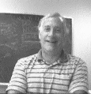

|
 |
ACM Fellow Profile
friedman@joda.cis.temple.edu |
 |
Elaborate on the work leading up to your achieving the distinction of ACM Fellow:
All of that work related to ACM Conferences. I chaired ACM CSC in Philadelphia,
Pennsylvania in February 1984, and was Small Conference Coordinator for the
Conference Board (1984-86) and ACM Conference Board Chairman (1986-90). I was
also Chairman of the 1987 ACM Conference on the History of Scientific and
Numeric Computation (in Princeton, New Jersey in May that year), ACM Conference
Committee Chairman, 1990-92, ACM Computing Week Chairman, 1992-1996, and ACM
Computing Week Conference Chairman (Nashville, Tennessee, February 1996).
As an ACM representative (of three SIGs), I also chaired the 1987 National Education Computing Conference (Philadelphia, 1987). I was Organizing Committee Chairman (from 1990-92, succeeded by David Wise in 1993) for the first Federated Computing Research Conference (FCRC 93, San Diego, California), and served as Exhibits Chairman, FRCR 96 in Philadelphia.
What is the best reference to your work?
The textbooks I've co-authored include
- (with Elliot B. Koffman), "Problem Solving, Abstraction, and Design Using C++" (Third Edition), Addison-Wesley Corporation, January, 2000
- (with Jeri, R. Hanly and Elliot B. Koffman), "Problem Solving and Program Design in C", Addison-Wesley Corporation, January, 1993
- (with Elliot B. Koffman), "Problem Solving and Structured Programming in FORTRAN 77" (Fifth Edition, with Science and Engineering Applications), Addison-Wesley Corporation, March, 1992
- (with Elliot B. Koffman), "BASIC, Introduction al lenguaje y resolucion de problemas con programacion estructurada" (Spanish Translation by Domitilo Libreras and Abdon Sanchez S.), Sistemas Tecnicos de Edicion, S.A. de C.V., Mexico, D.F., 1986
- (with Elliot B. Koffman), "Problem Solving in Structured BASIC-PLUS", Addison-Wesley Reading, MA, January, 1984
- (with Elliot B. Koffman), "FORTRAN, Introduction al lenguaje y resolucion de problemas con programacion estructurada" (Spanish Translation by Ruy R. Ballester and Eduardo Zuluaga R.), Fondo Educativo Interamericano, S.A. de C.V., Mexico, D.F., 1984
- (with Elliot B. Koffman), "Problem Solving and Structured Programming in FORTRAN" (Russian Translation), USSR Publication, 1983
- (with Elliot B. Koffman), "Problem Solving and Structured Programming in WATFIV", Addison-Wesley, Reading, MA, March, 1982
References to papers I've authored are in my Vita at http://www.cis.temple.edu/~friedman/.
What are your current research interests?
My current research focus, in the area of object-oriented (O-O) design and
programming paradigms, has been on the integration of object-oriented techniques
into the graduate and undergraduate curricula at Temple. I am also interested in
the study of the evolution of software design approaches and notations.
My earlier interests included software portability and adaptability, the use of
abstraction in software construction, programming languages and software
metrics.
How pervasive has O-O become in the curriculum at Temple? How much
emphasis is still placed on structured methods?
We start out teaching structured methods and shift to O-O approaches
early in our second course. I am convinced that some students can learn O-O
approaches more easily than others (some find it VERY hard). I'm
interested in finding and working with colleagues to design experiments to
identify some "predictors" -- measurable characteristics which provide a good
indication of what kinds of students can learn object-oriented techniques
fairly readily.
By the way, I believe that students who adapt to O-O techniques readily are the same ones who can pretty much teach themselves all there is to know about procedural techniques. "O-O first" obviously works for these students -- they can learn the procedural approaches themselves; they can generalize from examples, recognize patterns, etc. Similar research has been done in the Calculus arena, but none that I know of at the O-O level in computing.
What are your current outside interests?
Classical music, baseball, and travel.
What was the greatest influence on you?
My first co-op job -- fresh out of high school, at the U. S. Navy Marine
Engineering Lab in Annapolis Maryland. All of my early computing experience
from the Bendix G-15 to the IBM 1401 and later the IBM System 360 came as a
result of this opportunity.
What was your greatest influence?
Aside from ACM Conferencing, eight introductory programming text books
(Fortran, Basic, C, and C++) all written with Elliot B. Koffman.
Who do you think has made the greatest impact on software engineering?
I am not sure this is a reasonable question. Parnas certainly is often quoted,
but one can't forget the really early pioneers such as Yourdon, Constantine,
Jackson, Myers, etc. Mills and Brooks deserve mention in the same breath. And
perhaps the folks who participated in the 1968 NATO Science Committee meeting
on Software Engineering Techniques should top this list -- they are generally
credited with coining the phrase.
However, I think I can trace back to the early '50s, if not earlier, to folks who were really practicing certain analysis and design approaches (although no one thought of their work as software engineering -- at least not at that time).
I actually have about 60 pages of a rough draft of a paper started 12 years ago at SEI in which I attempted to document some of the earliest efforts in what I call SW analysis and design, if any one is interested -- this paper is so old it is in Word 4.0 but may still be retrievable.
Which computer-related areas are most in need of investment by government,
business or education?
Software Engineering, networks, communications, and distributed systems, very
large data bases and a whole host of issues related to building software in
different applications domains from components designed for those domains,
pulled off the shelf and eventually "tweaked" to serve specific client needs.
While we are at it -- the BIGGEST need for government/industry support is in
periodic retraining of CIS faculty, many of whom get out of date within three
to five years and stay that way.
What advice do you have for computer science/software engineering students
as to the skills they should develop during pursuit of their degrees, and how
they should approach learning throughout their careers?
Students need to know English -- how to write, read, analyze and assimilate,
work in groups, and make presentations. They need to know how to sell their
ideas to others as well as listen to others (especially those trying to describe
a problem they would like to solve on the computer). Technically, they need to
develop good programming and analysis skills and good systems design
capabilities.
They should gain a good mix of theory and practice in the areas of networks, operating systems, distributed computing (from a software and hardware view), and database technology (including warehousing, filtering, etc.). It would be good if they also had an exposure to social and ethical issues as well as some cooperative (work-study) or internship experience.
There is also no substitute for understanding something about the problem domain(s) in which they are working, be it business, engineering, art, social sciences, health, or other fields. They should have had a few opportunities to work on large(r) projects with others.
You've been department chair at Temple for 12 of the past 16 years.
What are your plans for the future?
I hope to retire from administration June 30, 2001 and either focus on
teaching or perhaps go to NSF for a year or two. I am also looking at a few
other options that are a bit unusual, related to urban community
(technology-focused) activities in North Philadelphia.
What are your recollections or impressions of SEI (the Software
Engineering Institute), where you were Visiting Computer Scientist?
I believe that the basic idea behind the SEI that I knew a decade ago was far
ahead of its time, and much needed in many other areas in science and
mathematics. If the U. S. had a few dozen places such as SEI, spanning other
areas of science and technology, and math, we would have far better instruction
and probably more high-quality students in the sciences.
A repository of information, where researchers, educators, teachers, and implementors can go (with support) for a year or two and interact with others regarding the latest issues in research and teaching, is a wonderful thing. We need more of them.
Thanks!
You are very welcome.
Profiled by Greg Cooper